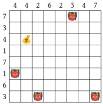
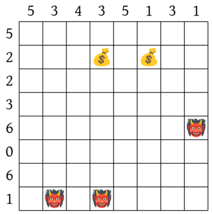
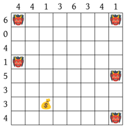
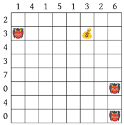
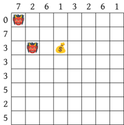
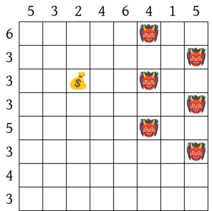
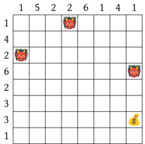
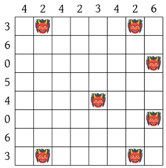
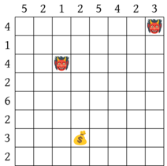

Dungeons&Diagrams
Pour résoudre ce problème, on partira du fichier d_and_d.c.
1 Présentation du problème et de la résolution
1.1 D&D
Dungeons&Diagrams (D&D ) est un casse-tête type Sudoku inventé par Zach Barth et présenté initialement sur son site en version papier et, plus récemment, au sein du jeu Last Call BBS de Zachtronics.
Une grille de D&D est la donnée d’une grille rectangulaire sur laquelle figure des monstres 👹 et des trésors 💰, ainsi que des indications chiffrées sur les colonnes et les lignes. Le but est de remplir certaines cases vides par des murs en respectant les règles suivantes :
- Le nombre de murs sur une ligne (resp. une colonne) correspond au nombre associé à cette ligne (resp. cette colonne)
- Tous les monstres sont dans des impasses et toutes les impasses contiennent des monstres. Une impasse étant une case ayant exactement une case voisine libre.
- Chaque trésor est dans une salle au trésor qui est un carré sans mur de taile 3x3 ne contenant aucun monstre et un seul trésor et qui, de plus, est bordé de murs sauf en exactement une case qui doit être libre.
- Le graphe induit par la grille avec des connexions directes, mais pas en diagonale, est connexe.
On suppose que les grilles admettent une unique solution.
Ainsi, par exemple, une grille 6x6 et son unique solution
Si on considère une grille satisfaisant les contraintes de lignes et de colonnes, une fois une salle au trésor identifiée, il est possible de la remplir et de placer un monstre à son unique entrée.
On en déduit ainsi une méthode de vérification des solutions :
- tester qu’il y a le bon nombre de murs dans chaque ligne et chaque colonne
- vérifier que chaque trésor est dans une salle au trésor conforme
- remplir les salles au trésor et placer un monstre à leur entrée
- vérifier que le graphe est un arbre dont les feuilles sont les cases contenant des monstres.
En pratique, n’est pas nécessaire de vérifier la dernière condition avec un parcours de graphe, on peut se contenter de vérifier que graphe est localement arborescent :
- chaque case avec un monstre est de degré 1
- chaque case libre est de degré au moins 2
- il n’existe pas de carré de cases libres
Compte tenu de la vérification de la présence d’une unique entrée dans une salle au trésor, on peut réordonner les vérifications :
- tester qu’il y a le bon nombre de murs dans chaque ligne et chaque colonne
- vérifier que les cases contenant des monstres sont de degré 1
- vérifier que les cases libres sont de degré au moins 2
- vérifier que chaque trésor est dans une salle au trésor conforme
- remplir les salles au trésor
- vérifier que la grille résultante ne contient pas de carré de cases libres
1.2 Représentation des plateaux en 64bit
On va résoudre ce casse-tête par backtracking en C. Les grilles étant de taille 8x8, on peut ainsi représenter une information booléenne sur chaque case à l’aide d’entiers non signés sur 64bit : chaque bit est associé à une case.
On choisit ici l’ordre suivant :
qui correspond au mot binaire \(a_{63} ... a_0\) sur 64bits avec \(a_i\) représentant l’information sur la case \(i\).
On va associer trois entiers à une grille :
- le plateau (board) où un booléen vrai indique la présence d’un mur
- les monstres où un booléen vrai indique la présence d’un monstre
- les trésors où un booléen vrai indique la présence d’un trésor
Par exemple, pour la grille :
on a les monstres dans les positions 15, 18, 31, 47 et 63. Cela
correspond alors à l’entier s’écrivant en binaire \[
1000000000000000100000000000000010000000000001001000000000000000
\] et qui vaut 9223512776490909696 en décimal ainsi que
0x8000800080048000 en hexadécimal.
On pourra écrire en C :
On pourrait considérer une représentation developpée sous la forme d’un tableau de 64 booléens. Dans ce cas-là, on obtiendrait la valeur suivante en C :
1.3 Représentation du problème
Pour représenter le problème, on utilise le type suivant en C :
Pour définir un problème, on peut le faire directement comme ici :
Mais par lisibilité, on peut préciser les noms des champs comme ici :
Cette dernière syntaxe a l’avantage d’initialiser à 0 tous les champs omis. On peut ainsi utiliser les fonctions précédemment définies pour présenter le problème de manière plus lisible dans le code source :
problem p = {
.rows = { 3,2,5,3,4,1,4,4 },
.columns = { 1,4,2,7,0,4,4,4 }
};
map monsters = {
0, 0, 0, 0, 0, 0, 0, 0,
0, 0, 0, 0, 0, 0, 0, 1,
0, 0, 1, 0, 0, 0, 0, 0,
0, 0, 0, 0, 0, 0, 0, 1,
0, 0, 0, 0, 0, 0, 0, 0,
0, 0, 0, 0, 0, 0, 0, 1,
0, 0, 0, 0, 0, 0, 0, 0,
0, 0, 0, 0, 0, 0, 0, 1,
};
map treasures = {
0, 0, 0, 0, 0, 0, 0, 0,
0, 0, 0, 0, 0, 0, 0, 0,
0, 0, 0, 0, 0, 0, 0, 0,
0, 0, 0, 0, 0, 0, 0, 0,
0, 0, 0, 0, 0, 0, 0, 0,
0, 1, 0, 0, 0, 0, 0, 0,
0, 0, 0, 0, 0, 0, 0, 0,
0, 0, 0, 0, 0, 0, 0, 0,
};
// ou plus rapidement
map treasure = { [41] = 1 }; // met 1 à l'indice 41 et 0 ailleurs
p.monsters = map_to_board(monsters);
p.treasures = map_to_board(treasures);1.4 Choix pour le backtracking
On va effectuer des remplissages incrémentaux de la grille pour résoudre ce problème par backtracking. On reprend donc la terminologie de plateau et de coups permettant de passer d’un plateau à un autre.
Une majeure partie des conditions de résolution portant sur des grilles complètes, on pourrait se contenter de vérifier uniquement les grilles remplies. En faisant cela, on obtient un arbre déraisonnablement grand.
Par exemple, avec comme coup le fait, pour une position donnée, de choisir ou pas de placer un mur, on obtient un arbre binaire ayant \(2^{64}\) feuilles.
On va plutôt considérer les coups consistants à placer directement \(k\) murs sur une ligne dont on sait qu’elle doit en contenir \(k\).
Même si ce nombre est beaucoup plus petit que le précédent, cela reste prohibitif pour faire une recherche exhaustive.
On va donc adopter une détection des nœuds pour lesquels on s’avère certain de ne pas pouvoir résoudre le problème.
Tout d’abord, on restreint les lignes à celles qui ne placent pas un mur sur la même case qu’un monstre ou un trésor.
Ensuite, si on un nœud correspondant à avoir rempli les k premières lignes, on vérifie :
- que le nombre de murs dans une colonne n’est pas strictement supérieur à la contrainte (column overload)
- qu’aucun monstre n’est sur une case de degré 0 (trapped monsters)
- qu’aucune case libre sur les k premières lignes n’est de degré \(\le 1\) (no deadend upto row)
On a indiqué entre parenthèses les noms des fonctions qu’on programmera dans la suite pour réaliser ces tests.
2 Opérations bit à bit en C
Dans ce paragraphe, on notera 0b10101 une valeur en
binaire en C. Cette notation, calquée sur la notation
hexadécimale, n’est pas valide, mais rendra les exemples plus lisibles.
De même, dans les formules, on notera \({10101}_2\) un nombre écrit en binaire.
On va étudier ici des opérateurs opérant directement sur l’écriture binaire des entiers. Aucun de ces opérateurs n’est explicitement au programme, cependant, leur usage permet, selon les contextes, d’avoir code plus efficace et plus lisible.
2.1 Opérateurs de décalage
On utilise l’opération x >> k pour décaler
l’écriture de x de k bits vers la droite, cela revient donc
à réaliser une division par \(2^k\).
De même, on utilise l’opération x << k pour
décaler son écriture de k bits vers la gauche en rajoutant des
0.
Exemple :
123 >> 3vaut 15 car123=0b1111011donc123 >> 3 = 0b1111 = 15123 << 2vaut 492 car123 << 2 = 0b111101100 = 492
Pour calculer \(2^k\) on peut ainsi
écrire 1 << k mais cela pose un problème pour \(k \ge 32\) parce qeu \(1\) est un int et le calcul
fait apparaitre un dépassement de capacité qui induit une troncature à
0. Pour \(k \le 63\), on peut régler ce
problème en utilisant 1UL << k car 1UL
est la constante 1 en unsigned long.
Cependant, comme ce problème n’est pas propre aux constantes, on
préfèrera utiliser une coercition comme ici :
(uint64_t)x << k qui fonctionne quand x
est un int.
On donne dans le code fourni une fonction
afin de pouvoir écrire directementbit(n) pour
calculer \(2^n\) avec \(n \in \range{0}{63}\).
2.2 Opérateurs logiques
Il est possible de réaliser les opérations logiques connues sur les booléens en les appliquant bit à bit. Pour cela, on utilise :
a & bpour réaliser un et logique entre chaque bit. Ainsi, en écrivant abusivement en binaire, on a0b10110 & 0b11010qui vaut0b10010.a | bpour réaliser un ou logique entre chaque bit. Ainsi, on a0b10110 | 0b11010qui vaut0b11110.a ^ bpour réaliser un ou exclusif logique entre chaque bit. Ainsi, on a0b10110 ^ 0b11010qui vaut0b01100.~apour réaliser la négation logique de chaque bit. Ainsi, on a~0b10101qui vaut0b01010.
Une manière classique d’utiliser & est de réaliser
des masquages : on stocke dans une variable mask les bits
que l’on veut étudier et on écrit x & mask pour ne
conserver que ceux-ci.`
L’opération | permet de réaliser efficacement une
addition d’entiers dont les bits sont disjoints. En effet, comme il n’y
a pas de retenue dans ce cas-là, il suffit de superposer les écritures
avec un ou.
2.3 Popcount
On va avoir besoin de compter les murs ou les cases libres, pour cela
on utilise une opération appelée popcount (pour
population count) qui permet, étant donné un entier non signé
x sur 64bits de renvoyer le nombre \(p(x) \in \range{0}{64}\) de 1 dans son
écriture binaire.
Dans la suite, on utilisera cette fonction sur un plateau pour compter les murs ou sur sa négation pour compter les cases libres.
2.3.1 Calcul naïf
Pour réaliser un calcul naïf, on va juste itérer sur les bits en faisant des tests de parité et des division par 2.
On pourrait penser que ce code est long en raison de la boucle, mais en fait, celle-ci sera sûrement déroulée par le compilateur et le problème vient des branchements induits par les tests de parité.
2.3.2 Calcul par masquage et additions
Soit \(p > 0\) et \(x,y\) deux entiers tels que \(x, y \le p < 2^p\). On a alors \(x + y \le 2p < 2^{p+1}\) ainsi, si \(z = x 2^p + y\) en considérant le masque \(m = 2^p - 1\) on peut calculer \(x+y\) ainsi :
Cette remarque a priori anodine permet de réaliser un calcul efficace
de popcount. En effet, on souhaite effectuer en place la
somme de tous les bits d’un entier.
Si x est un entier sur 8 bits, on peut se servir du
procédé de masquage pour réaliser plusieurs additions d’un coup à l’aide
des masques \[
m_1 = \overline{01010101}^2
\quad
m_2 = \overline{00110011}^2
\quad
m_3 = \overline{00001111}^2
\]
Par exemple, si \(x = 173 = \overline{10101101}^2\), on va avoir :
\[ \begin{array}{ccc||c|c|c} z & m & p & z \& m & (z \& (m << p)) >> p & z \& m + (z \& (m << p)) >> p \\ 10101101 & 01010101 & 1 & {\color{red}00}{\color{green}00}{\color{blue}01}01 & {\color{red}01}{\color{green}01}{\color{blue}01}00 & {\color{red}01}{\color{green}01}{\color{blue}10}01 \\ 01011001 & 00110011 & 2 & {\color{red}0001}0001 & {\color{red}0001}0010 & {\color{red}0010}0011 \\ 00100011 & 00001111 & 4 & 00000011 & 00000010 & 00000101 \end{array} \]
Ici, les couleurs servent à identifier les sous-mots sur lesquels portent les additions.
Le dernier résultat est alors le nombre de 1 présent dans \(x\) : \(\overline{00000101}^2 = 5\).
On en déduit le programme C suivant :
2.3.3 Instruction assembleur
Il existe une fonction __builtin_popcountll permettant
de réaliser un popcount grâce à une instruction assembleur quand elle
est disponible sur l’architecture visée, ou avec le code qu’on vient de
voir quand ce n’est pas le cas.
Si votre processeur dispose de cette instruction, vous pouvez
compiler avec le flag -mpopcnt pour l’utiliser. Cela
permettra d’améliorer les performances.
3 Squelette du backtracking
La fonction récursive solve réalisant le backtracking a
la structure suivante :
void solve(problem *p, int row, board b)
{
// teste si b est une impasse et sort
// b est une feuille de l'arbre
if(row == 8)
{
// teste et sort si ce n'est pas une solution
printf("Solution %lx\n", b);
print_board(p, b);
return;
}
// pour chaque mouvement move valide dans
// la rangée row
solve(p, row+1, b+move);
}Afin de réaliser la boucle sur les mouvements, on peut itérer sur les 256 placements possibles de murs, ne garder que ceux qui ont le bon nombre de murs et qui ne se superposent pas aux monstres et aux trésors.
La fonction précédente va refaire continuellement les mêmes calculs
de popcount.
4 Implémentation des différentes vérifications
4.1 Tests pour les colonnes
Il n’est pas nécessaire de tester si les lignes ont le bon nombre de murs, car on a restreint le backtracking pour l’assurer.
4.2 Impasses
Maintenant qu’on peut compter le degré d’une position dans le graphe, on peut réaliser les tests présentés plus haut.
4.2.1 Carrés libres
4.2.2 Salles au trésor
Pour chaque trésor, on va appliquer la méthode suivante :
- à l’aide d’un masque correspondant à un carré 3x3, identifier une possible salle au trésor autour du trésor (pas la peine de toute les chercher, il ne peut il y en avoir qu’une)
- à l’aide d’un masque correspondant à la bordure de la salle, en prenant garde au fait qu’elle n’est pas nécessairement à l’intérieur du plateau, déterminer l’unique ouverture de la salle
- remplir la salle au trésor de mur
Si jamais on n’arrive pas à trouver une salle valide, on sait que le plateau est insoluble.
5 Exemples
Les exemples de problème présents dans le fichier d’en-tête sont reproduits ici dans le même ordre.
  
  
  
 Marc de Falco
Marc de Falco